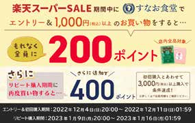
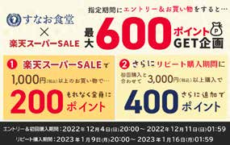
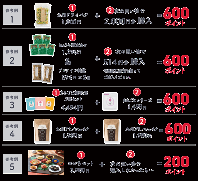
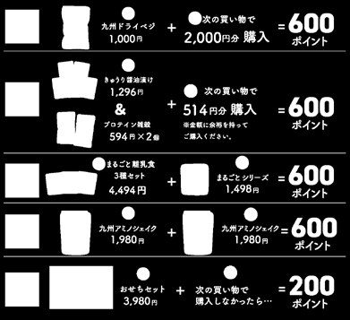

PORTFOLIO
M.N.
EC運営 / セール企画 / Webデザイン（Illustrator・Photoshop）
9年
ECサイト運営 通算経験
1,300万→4,100万円
楽天市場店 月商成長（4年間）
50万→1億円
プロテイン商材 年間売上成長
2〜4名の少数チームで、セール企画・販促デザイン・データ分析のPDCAを回しながら楽天市場運営に従事。 企画立案からバナー・LP制作までを一気通貫で担当できるのが強みです。
SKILLS
Illustrator
使用歴 15年以上
Webデザイン・LP作成・バナー作成から印刷物まで幅広く対応。
Photoshop
使用歴 10年以上
Webデザイン・バナー作成・商品写真の加工。
Excel（VBA）
使用歴 10年以上
CSV作成の自動化システム構築、データ分析、コーディング。
WORKS — 楽天販促デザイン
楽天スーパーSALE 販促素材（2023年3月）
3ヶ月に1度のビッグセール期間中、日替わりの目玉企画を毎日実施。企画立案からバナー・クーポン画像のデザインまでを担当し、顧客が直感的に理解できる見せ方を重視しました。


楽天ポイントアップ企画販促（2023年12月）
楽天独自のポイントアップキャンペーンを、初回購入者にも伝わりやすい構成に変更。訴求内容を整理し、購入率向上を狙ったデザインへ改善しました。


WORKS — クラフト系ECサイト運営
スクラップブッキング用品（型番商品2,000点以上）を扱う自社ECサイトの店長として、商品企画・撮影・販促デザイン・サイト運営を一貫して担当しました。



CAREER
2020年1月〜現在
楽天市場 自社運営店舗 運営
グルメ系商品 EC店舗
- セール企画の立案・実行、販売データを基にした売上予測・発注
- バナー・説明文などの販促クリエイティブ制作
- メルマガ・LINE配信の管理、広告運用（純広告・検索広告・SNS広告）
2014年8月〜2019年9月
ECサイト店長（スクラップブッキング用品）
輸入クラフト用品専門ECサイト
- 未経験から仕入れ以外の運営全般を担当、パート4名のマネジメント
- CSV一括登録の仕組みをエンジニアと連携して構築
- 商品企画・撮影・受注/クレーム対応・バナーデザイン・サイトコーディング（HTML/CSS）
2010年9月〜2014年7月
広告制作（店舗紹介パネル制作）
案内所向けパネル制作事業
- 依頼者の店舗の雰囲気に合わせたデザイン提案
- スピードとクオリティの両立を意識した制作進行
趣味：漫画 / ゲーム / 3D制作 / 読書